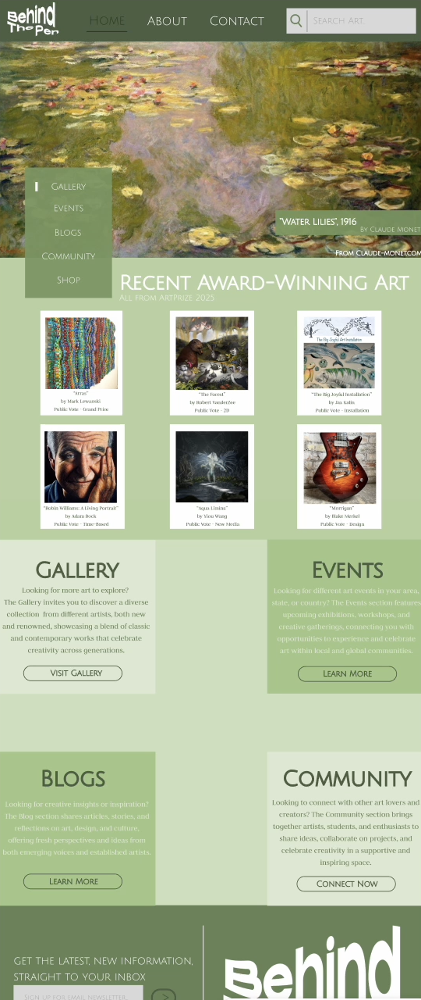
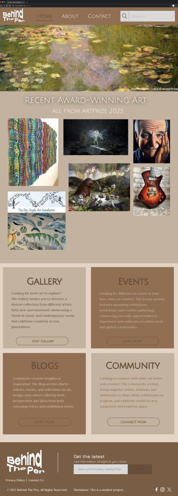

The Process
Overview
Behind The Pen is an online art platform that aims to present
artwork from a variety of perspectives, including completed pieces, artist biographies, creative
processes, and community involvement. By combining storytelling with visual inspiration, the
website serves as both an educational resource and a digital gallery, allowing users to
appreciate not just what artists produce but also how they do it.
Some quick example text to build on the card title and
make up the bulk of the card's content. Some quick example text to build on the card title and
make up the bulk of the card's content. Some quick example text to build on the card title and
make up the bulk of the card's content. This shows the beginning phases of Behind The Pen's
brainstorming process, when concepts, themes, colors, and key elements are collected and
organized. It demonstrates how the project got started, with inspiration, research, and an
expanding list of objectives that influenced the final website design. This stage demonstrates how I created my Behind The Pen
sitemap, which displays all of the primary pages and subpages to show how visitors
navigate the website. I made sure that every page connected organically and supported a
clear, user-friendly structure by specifying the Home, About, Gallery, Events, Blogs,
Community, Contact, and Shop/Donate sections. This step illustrates the wireframe phase of my website
design, during which I prepared each page's fundamental structure and layout before
incorporating colors, graphics, or other complex components. In order to make sure
the website feels balanced, well-organized, and simple for users to navigate, the
wireframe assists in laying out the locations of the navigation, graphics, text, and
content sections. I experimented with various hero section designs in
this step to see how Behind The Pen's homepage might present the website.
Typography, layout, and personality are the main themes of each hero concept.
They might be bold and daring, traditional and elegant, or basic and
minimalistic. By making several sections, I was able to evaluate aesthetics and
determine which path best complemented my entire website theme. In order to experiment with how Behind The Pen
might appear and work, I drew out many potential homepage and gallery
layouts. I was able to arrange the logo, navigation bar, photographs, search
tools, and category sections like media, era, and artist with the aid of
these basic sketches. Before using wireframes and digital mockups, sketches
made it simpler to visualize concepts. A deep red color scheme was experimented
with in the first mockup, which gave the website a striking and dramatic
tone. In order to generate a gallery-like, cinematic vibe, this version
experimented with great contrast, black backgrounds, and emphasized
navigation elements. It clarified for me how mood and readability are
impacted by color intensity.  The second design changed to a serene,
earthy green color scheme that was influenced by art museums and the
natural world. New and enhanced readability, along with a cleaner
structure and gentler tones, characterized this version. It produced
a calmer, friendlier atmosphere that is highly compatible with the
concept of a carefully designed artistic setting.  The third design utilized a warm
brown color scheme to create depth and an organic, gallery-like
vibe. This color scheme effectively draws attention to the
artwork while giving the website a traditional, grounded
appearance. It also served as a method to evaluate warmth and
delicate contrast within a professional layout.


Brainstorming

Sitemap

Wireframe
Moodboard

Iterations
Round 1 Designs
Round 2 Designs
Round 3 Designs
Results